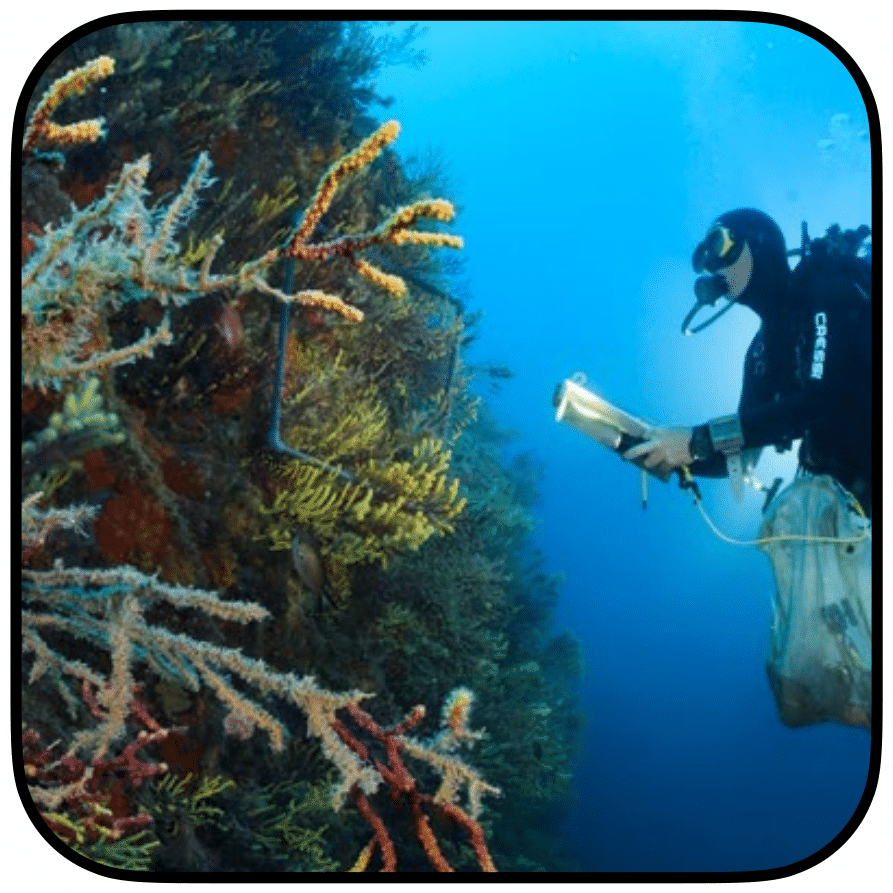
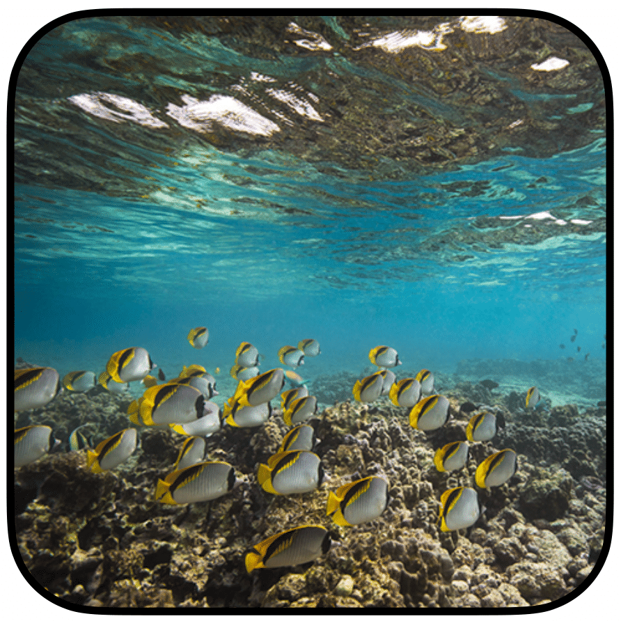
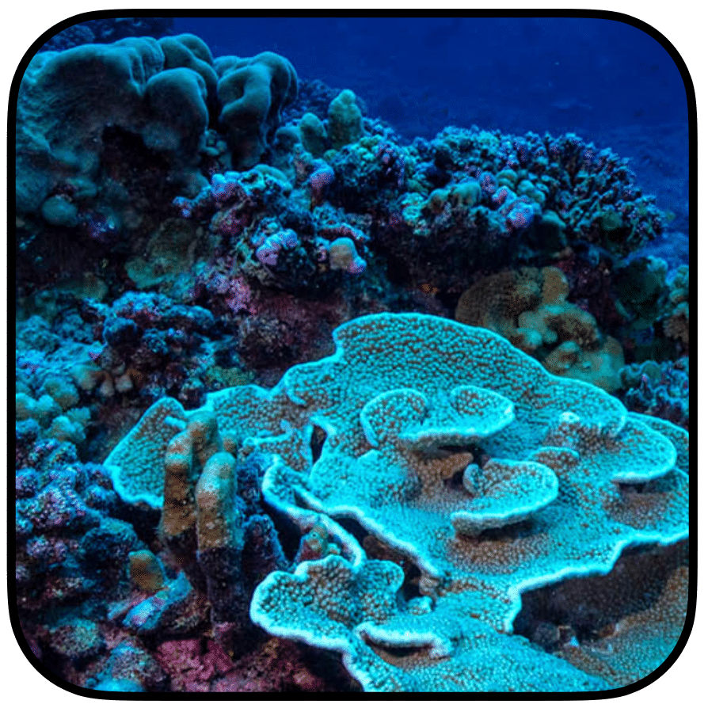
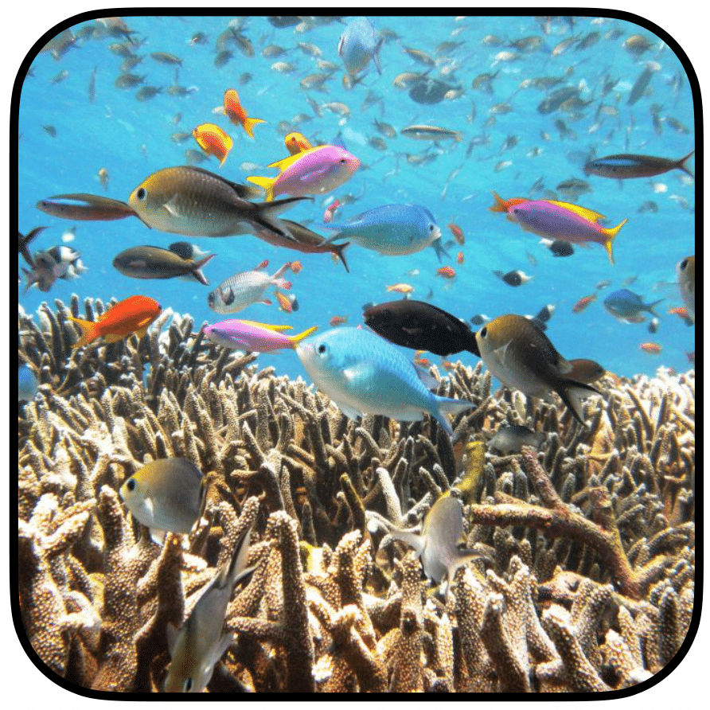
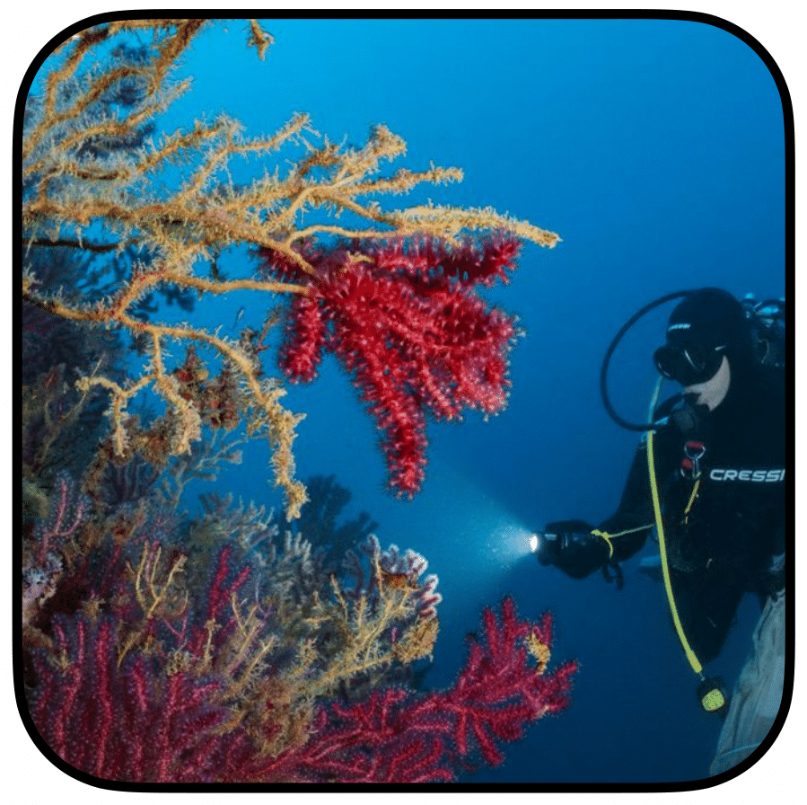

Scientific peer-reviewed publications
18. Somma E, Zupo V, Mutalipassi M, Ruocco N, Terlizzi A, Iamunno F, Carlot J, & Costantini M (2025)
Ocean acidification influences strain selection and metabolism of the benthic diatom Cocconeis neothumensis var. marina.
Ecosystems
Abstract: The uptake of carbon dioxide (CO2) by oceans is dramatically altering the chemistry of seawater, leading to a continuous decrease of pH over the last century. This phenomenon, called ocean acidification (OA), has raised concerns due to its negative effects on marine biodiversity, including plankton communities and seagrass meadows. The most relevant seagrass in the Mediterranean is Posidonia oceanica, producing complex and stable benthic ecosystems. OA markedly affects the colonization and settlement patterns of epibionts within the leaf communities of P. oceanica. Epiphytic diatoms associated with P. oceanica are influenced by complex chemical and trophic interactions and play a fundamental role in the ecological successions characterizing the leaf stratum. In this study, we isolated two strains of Cocconeis neothumensis var. marina, one of the main epiphyte diatoms associated with P. oceanica, from two sites off the Island of Ischia (Italy) characterized by different pH conditions, i.e. a naturally low pH site (pH 7.6) influenced by volcanic CO2 emissions, and an adjacent location with ambient pH conditions (pH 8.1). We further cultured both strains of C. neothumensis under both pH conditions, resulting in four treatment conditions. Four significantly different growth curves were obtained, and metabolomic studies confirmed that the physiology of the strains differed according to pH conditions. Overall, this study demonstrated that OA is likely to trigger the selection of specific diatom strains, with possible consequences for trophic and chemical relationships among the associated consumers.
Read more...

17. Carlot J, Galobart C, Gomez-Gras D, Santamaria J, Golo R, Sini M, Cebrian E, Gerovasileiou V, Ponti M, Turicchia E, Comeau S, Rilov G, Tamburello L, Pulido Mantas T, Cerrano C, Ledoux JB, Gattuso JP, Ramirez-Calero S, Millán Agudo L, Montefalcone M, Katsanevakis S, Garrabou J & Teixidó N (2025)
Vulnerability of benthic trait diversity across the Mediterranean Sea following Mass Mortality Events.
Nature Communications
Abstract: Unraveling the functional future of marine ecosystems amid global change poses a pressing challenge. This is particularly critical in the Mediterranean Sea, which is highly impacted by global and local drivers. Utilizing extensive mass mortality events (MMEs) datasets spanning from 1986 to 2020 across the Mediterranean Sea, we investigated the trait vulnerability of benthic species that suffered from MMEs induced by nine distinct mortality drivers. By analyzing changes in ten ecological traits across 389 benthic species—constituting an extensive compendium of Mediterranean ecological traits to date—we identified 228 functional entities (FEs), defined as groups of species sharing the same trait values. Our findings indicate that of these, 55 FEs were impacted by MMEs, accentuating a heightened vulnerability within specific trait categories. Notably, more than half of the mortality records showed severe impacts on calcifying and larger species with slower growth which mostly account for tree-like and massive forms. Altogether, we highlight that 29 FEs suffered extreme mortality, leading to a maximum increase of 19.1% of the global trait volume vulnerability over 35 years. We also reveal that 10.8% of the trait volume may have been temporarily lost over the last five years, emphasizing the risk of a rapid ecological transformation in the Mediterranean Sea.
Read more...

16. Brandl SJ, Carlot J, Graham NAJ, Stuart-Smith RD, Donovan MK, Keith SA, Edgar GJ, Wicquart J, Guilhaumon F, Bigot L, Job S, Maréchal JP, Wickel J, Wilson S, Karkarey R, Arthur R, Baird A, Hoey AS, Arias-Gonzalez JE, Mouillot D, Adjeroud M & Parravicini V. (2024)
Unifying coral reef states through space and time reveals a changing ecosystem.
Global Ecology and Biogeography
Abstract: Ecological state shifts that alter the structure and function of entire ecosystems are a concerning consequence of human impact. Yet, when, where, and why discrete ecological states emerge remains difficult to predict and monitor, especially in high-diversity systems. We sought to quantify state shifts and their drivers through space and time in the most ecologically-complex marine ecosystem: tropical coral reefs. Using a global dataset of 3,375 coral reef surveys, along with thirteen time series datasets ranging between 1987 and 2019, we applied a novel double-dichotomy approach to classify coral reefs into four simplified and discrete states based on the relative contributions of corals vs. algae to benthic cover and small-bodied vs. large-bodied fishes to fish standing stock. We then examined state shifts considering a range of spatial predictors and tested whether states have shifted directionally over time, and the nature of the most common transitions. We show that geographic, environmental, and anthropogenic context fundamentally shapes coral reef states at the local scale, which explains disparities among case studies, and stakes out critical baseline expectations for regional management efforts. We also reveal clear multi-decadal state shifts on coral reefs: over time, systems dominated by reef-building corals and small-bodied, planktivorous fishes tend to have been replaced with reefs characterized by algae and larger-bodied fishes. Our results suggest a previously unrecognized transition from systems that harness external subsidies through small-bodied consumers associated with structurally-complex live corals, to herbivore-dominated systems with stronger bottom-up dynamics. Overall, the partitioning of complex reef ecosystems into a small suite of discrete ecological states suggests that spatial context-dependency, shifting baselines, and changes in reef functioning are crucial considerations for coral reef management in the 21st century.
Read more...
15. Pérez-Rosales G, Rouzé H, Pichon M, Bongaerts P, Bregere N, Carlot J, UTP Consortium, Parravicini V & Hédouin L (2024)
Differential strategies developed by two light-dependent scleractinian corals to extend their vertical range to mesophotic depths.
Coral Reefs
Abstract: Mesophotic coral ecosystems are characterised by the presence of photosynthetic scleractinian corals despite the decreasing amounts of light available with depth. To better understand physiological strategies across a broad depth gradient, we studied the biological trait responses of Pocillopora cf. verrucosa from 6 to 60 m depth and Pachyseris “speciosa” spp. from 20 to 90 m depth at four islands of French Polynesia. Specifically, we characterised associated Symbiodiniaceae communities, photophysiological traits (Symbiodiniaceae density and chlorophyll concentrations), micro-morphology and trophic plasticity (autotrophy vs heterotrophy inferred from stable isotopes). Our results showed that both taxa can live at mesophotic depths without significant genetic structuring in their generic Symbiodiniaceae communities, mainly composed of Cladocopium and Durusdinium. Yet, the prevalence of Symbiodiniaceae ITS2 profiles revealed location-based variations that sometimes interact with depth and highlight putative shallow- or depth-tolerant taxa. For both taxa, symbiont density and chlorophyll pigment concentrations increased with increasing depth. We also found a change in their skeletal micro-morphology with an increase in the inter-corallite distance for Pocillopora cf. verrucosa and a decrease in the height of septa for Pachyseris “speciosa” spp. with depth. Finally, we found no isotopic evidence of switching to a more heterotrophic diet as their primary energy source, although host–tissue δ13C ratios became more negative with depth in both corals. Overall, our findings show similarity (across the two species) and species-specific strategies (biological trait patterns with increasing depth) underlying the capacity of symbiotic scleractinian corals to live in low-light environments.
Read more...

14. Krimou S, Raick X, Mery E, Carlot J, Carpentier C, Sowinski J, Sowinski L, Minier L, Roux N, Maueau T, Bertucci F & Lecchini D (2024)
Restoring the reef: coral restoration yields rapid impacts on fish assemblages.
Estuarine, Coastal and Shelf Science
Abstract: Coral reefs harbor one of the highest biodiversity on Earth but increasing disturbances have often led to rapid shifts from coral to algal states, prompting the development of conservation methods, including coral restoration. While most studies have focused on the medium and long-term effects of restoration on fish assemblages, less is known about its short-term effects (i.e., within one month) on associated communities. This study explored the short-term impacts (<1 month) of coral restoration, including four restoration conditions, on fish abundance, diversity, and assemblages in a marine educational area (a small coastal area managed by a scholl in the frame of an eco-citizen pedagogical program) in Bora, French Polynesia. Sixteen dead reef patches previously covered by macroalgae were grouped into four conditions as follows: four were non-restored (control condition), four were restored to 25% living coral cover (condition 25%), four to 50% living coral cover (condition 50%), and four were restored to 75% living coral cover (condition 75%). The abundance of fish at adult and juvenile stages was assessed, before and after coral restoration, using the fixed-point method for a period of 5 min on each of the 16 reef patches. Two successive observation periods were conducted for each patch: one focusing on more visible and mobile fish, and another on more cryptic species. Surveys were conducted one day and three days prior to restoration, and then 24 days and 28 days post-restoration. For adults, the difference in abundance, number of species, and diversity before and after restoration were not significant between the conditions. Similarly, for juveniles, no significant differences were observed when considering the conditions and restoration. Before restoration, the fish assemblages were randomly distributed between the four conditions for both adults and juveniles. After the restoration, the inter-conditions similarity decreased significantly for adults, but not for juveniles. Some species were associated with the more restored patches (Chaetodon citrinellus, Halichoeres trimaculatus, and Zanclus cornutus). Finaly, the restoration seemed to have variable effects depending on the trophic groups. Coral restoration has short-term effects on fish assemblages, indicating the effectiveness of restoration efforts even within a brief period. These rapid changes underscore the remarkable ability of adult fish to adapt to rapidly changing environments.
Read more...
13. Teixidó N, Carlot J, Alliouane S, Ballesteros E, De Vittor C, Gambi MC, Gattuso JP, Kroeker K, Micheli F, Mirasole A, Parravicini V & Villéger S (2024)
Functional changes across marine habitats due to ocean acidification.
Global Change Biology
Abstract: Global environmental change drives diversity loss and shifts in community structure. A key challenge is to better understand the impacts on ecosystem function and to connect species and trait diversity of assemblages with ecosystem properties that are in turn linked to ecosystem functioning. Here we quantify shifts in species composition and trait diversity associated with ocean acidification (OA) by using field measurements at marine CO2 vent systems spanning four reef habitats across different depths in a temperate coastal ecosystem. We find that both species and trait diversity decreased, and that ecosystem properties (understood as the interplay between species, traits, and ecosystem function) shifted with acidification. Furthermore, shifts in trait categories such as autotrophs, filter feeders, herbivores, and habitat-forming species were habitat-specific, indicating that OA may produce divergent responses across habitats and depths. Combined, these findings reveal the importance of connecting species and trait diversity of marine benthic habitats with key ecosystem properties to anticipate the impacts of global environmental change. Our results also generate new insights on the predicted general and habitat-specific ecological consequences of OA.
Read more...
12. Cornwall CE, Carlot J, Branson O, Courtney TA, Harvey BP, Perry CT, Andersson AJ, Diaz-Pulido G, Johnson MD, Kennedy E, Krieger EC, Mallela J, McCoy SJ, Nugues MM, Quinter E, Ross CL, Ryan E, Saderne V & Comeau S (2023)
Crustose coralline algae can contribute more than corals to coral reef carbonate production.
Communications Earth & Environment
Abstract: Understanding the drivers of net coral reef calcium carbonate production is increasingly important as ocean warming, acidification, and other anthropogenic stressors threaten the maintenance of coral reef structures and the services these ecosystems provide. Despite intense research effort on coral reef calcium carbonate production, the inclusion of a key reef forming/accreting calcifying group, the crustose coralline algae, remains challenging both from a theoretical and practical standpoint. While corals are typically the primary reef builders of contemporary reefs, crustose coralline algae can contribute equally. Here, we combine several sets of data with numerical and theoretical modelling to demonstrate that crustose coralline algae carbonate production can match or even exceed the contribution of corals to reef carbonate production. Despite their importance, crustose coralline algae are often inaccurately recorded in benthic surveys or even entirely missing from coral reef car- bonate budgets. We outline several recommendations to improve the inclusion of crustose coralline algae into such carbonate budgets under the ongoing climate crisis.
Read more...

11. Jouval F, Adjeroud M, Latreille AC, Bigot L, Bureau S, Chabanet P, Durville P, Elise S, Obura D, Parravicini V, Guilhaumon F, Brandl SJ, Carlot J & Penin L (2023)
Using a multi-criteria decision-matrix framework to assess the recovery potential of coral reefs in the South Western Indian Ocean.
Ecological Indicators
Abstract: Over the last two decades, coral reefs have experienced dire declines due to intensifying anthropogenic disturbances and climate change. Defining and quantifying coral reef resilience now represents a critical management objective, but there is still little consensus on the approach and the indices to be used. In this study, we develop a multi-factor reef recovery index based on the Technique for Order Preference by Similarity to an Ideal Solution (TOPSIS) method to assess the vulnerability of several insular coral reefs in the South Western Indian Ocean (SWIO) from 2016 to 2018. We showed, that in the wake of a regional bleaching event in 2016, the most isolated reefs of Europa, which is characterized by low direct human impact had the highest recovery potential. On the contrary, islands that are more prone to direct human influence (i.e.,, La Reunion and Rodrigues) displayed the lowest recovery potential.
Read more...

10. Carlot J, Vousdoukas M, Karambas T, Rovere A, Lenihan HS, Kayal M, Adjeroud M, Perez-Rosales G, Hedouin L & Parravicini V (2023)
Coral reef structural complexity loss exposes coastlines to waves.
Scientific Reports
Abstract: Coral reefs offer natural coastal protection by attenuating incoming waves. Here we combine unique coral disturbance-recovery observations with hydrodynamic models to quantify how structural complexity dissipates incoming wave energy. We find that if the structural complexity of healthy coral reefs conditions is halved, extreme wave run-up heights that occur once in a 100-years will become 50 times more frequent, threatening reef-backed coastal communities with increased waves, erosion, and flooding.
Read more...

09. Pérez-Rosales G, Hernández-Agreda A, Bongaerts P, Rouzé H, Pichon M, Carlot J, Torda G, UTP Consortium, Parravicini V & Hédouin L (2022)
Mesophotic depths hide high coral cover communities in French Polynesia.
Science of the Total Environment
Abstract: The rapid decline of shallow coral reefs has increased the interest in the long-understudied mesophotic coral ecosystems (MCEs). However, MCEs are usually characterised by rather low to moderate scleractinian coral cover, with only a few descriptions of high coral cover at depth. Here, we explored eight islands across French Polynesia over a wide depth range (6 to 120 m) to identify coral cover hotspots at mesophotic depths and the co-occurrent biotic groups and abiotic factors that influence such high scleractinian cover. Using Bayesian modelling, we found that 20 out of 64 of studied deep sites exhibited a coral cover higher than expected in the mesophotic range (e.g., as high as 81.8 % at 40 m, 74.5 % at 60 m, 53 % at 90 m and 42 % at 120 m vs the average expected values based on the model of 31.2 % at 40 m, 22.8 % at 60 m, 14.6 % at 90 m and 9.8 % at 120 m). Omitting the collinear factors light-irradiance and depth, these ‘hotspots’ of coral cover corresponded to mesophotic sites and depths characterised by hard substrate, a steep to moderate slope, and the dominance of laminar corals. Our work unveils the presence of unexpectedly and unique high coral cover communities at mesophotic depths in French Polynesia, highlighting the importance of expanding the research on deeper depths for the potential relevance in the conservation management of tropical coral reefs.
Read more...
08. Pérez-Rosales G, Pichon M, Rouzé H, Villeger S, Torda G, Bongaerts P, Carlot J, UTP Consortium, Parravicini V & Hédouin L (2022)
Mesophotic coral ecosystems of French Polynesia are hotspots of alpha and beta generic diversity for scleractinian assemblages.
Diversity and Distributions
Abstract: Aim: Revealing how diversity varies across the depth gradient is key for understanding the role of mesophotic coral ecosystems in the functioning of coral reefs. We quantitatively examined how alpha and beta generic diversity of scleractinian coral assemblages vary across a wide depth gradient for coral reefs.
Location: Sixteen sites in eight islands of three archipelagos in French Polynesia.
Methods: We studied generic diversity patterns of scleractinian corals, as derived from the analysis of photo-quadrats, across the seafloor from shallow to lower mesophotic depths (6–120 m) and on a wide geographic scale. Our sampling considered quantitative coral cover to explore the patterns of alpha and beta components of diversity across depth and horizontal space.
Results: We show that in French Polynesia, mesophotic coral ecosystems host higher alpha and beta generic diversity than shallow reefs despite decreasing coral cover with depth. The variation of coral genus richness across the depth gradient is mainly driven by a mid-domain effect with a peak at 40 m depth. At the same time, we found that the differences in coral genera across islands (spatial beta-diversity) increased steadily along the depth gradient.
Main conclusions: Our findings report the first quantitative results of coral cover and diversity from mesophotic coral ecosystems in French Polynesia and also present one of the few existing studies to examine the broad breadth of the mesophotic depth gradient. We demonstrate that mesophotic depths can host unexpectedly high generic richness of scleractinian coral assemblages. At the same time, we showed that increasing depth increases the differences in generic diversity composition across islands, whereas shallow reefs are similar in between. While a single island could conserve shallow regional biodiversity, mesophotic depths containing the richest diversity require site-specific measures, suggesting that considering these mesophotic depths in conservation is necessary to maintain regional diversity.
Read more...
Location: Sixteen sites in eight islands of three archipelagos in French Polynesia.
Methods: We studied generic diversity patterns of scleractinian corals, as derived from the analysis of photo-quadrats, across the seafloor from shallow to lower mesophotic depths (6–120 m) and on a wide geographic scale. Our sampling considered quantitative coral cover to explore the patterns of alpha and beta components of diversity across depth and horizontal space.
Results: We show that in French Polynesia, mesophotic coral ecosystems host higher alpha and beta generic diversity than shallow reefs despite decreasing coral cover with depth. The variation of coral genus richness across the depth gradient is mainly driven by a mid-domain effect with a peak at 40 m depth. At the same time, we found that the differences in coral genera across islands (spatial beta-diversity) increased steadily along the depth gradient.
Main conclusions: Our findings report the first quantitative results of coral cover and diversity from mesophotic coral ecosystems in French Polynesia and also present one of the few existing studies to examine the broad breadth of the mesophotic depth gradient. We demonstrate that mesophotic depths can host unexpectedly high generic richness of scleractinian coral assemblages. At the same time, we showed that increasing depth increases the differences in generic diversity composition across islands, whereas shallow reefs are similar in between. While a single island could conserve shallow regional biodiversity, mesophotic depths containing the richest diversity require site-specific measures, suggesting that considering these mesophotic depths in conservation is necessary to maintain regional diversity.

07. Carlot J, Rouzé H, Barneche D, Merciere A, Espiau B, Cardini U, Brandl SJ, Casey JM, Pérez-Rosales G, Adjeroud M, Hédouin L & Parravicini V (2022)
Scaling up calcification, respiration, and photosynthesis rates of six prominent coral taxa.
Ecology and Evolution
Abstract: Coral reefs provide a range of important services to humanity, which are underpinned by community-level ecological processes such as coral calcification. Estimating these processes relies on our knowledge of individual physiological rates and species-specific abundances in the field. For colonial animals such as reef-building corals, abundance is frequently expressed as the relative surface cover of coral colonies, a metric that does not account for demographic parameters such as coral size. This may be problematic because many physiological rates are directly related to organism size, and failure to account for linear scaling patterns may skew estimates of ecosystem functioning. In the present study, we characterize the scaling of three physiological rates — calcification, respiration, and photosynthesis — considering the colony size for six prominent, reef-building coral taxa in Mo'orea, French Polynesia. After a seven-day acclimation period in the laboratory, we quantified coral physiological rates for three hours during daylight (i.e., calcification and gross photosynthesis) and one hour during night light conditions (i.e., dark respiration). Our results indicate that area-specific calcification rates are higher for smaller colonies across all taxa. However, photosynthesis and respiration rates remain constant over the colony-size gradient. Furthermore, we revealed a correlation between the demographic dynamics of coral genera and the ratio between net primary production and calcification rates. Therefore, intraspe- cific scaling of reef-building coral physiology not only improves our understanding of community-level coral reef functioning but it may also explain species-specific responses to disturbances.
Read more...

06. Carlot J, Kayal M, Brandl SJ, Casey JM, Lenihan HS, Adjeroud M, Cardini U, Merciere A, Barneche D, Rovere A, Hedouin L & Parravicini V (2021)
Juvenile corals underpin coral reef carbonate production after disturbance.
Global Change Biology
Abstract: Sea-level rise is predicted to cause major damage to tropical coastlines. While coral reefs can act as natural barriers for ocean waves, their protection hinges on the ability of scleractinian corals to produce enough calcium carbonate (CaCO3) to keep up with rising sea levels. As a consequence of intensifying disturbances, coral communities are changing rapidly, potentially reducing community-level CaCO3 production. By combining colony-level physiology and long-term monitoring data, we show that reefs recovering from major disturbances can produce 40% more CaCO3 than currently estimated due to the disproportionate contribution of juvenile corals. However, the buffering effect of highly productive juvenile corals is compromised by recruitment failures, which have been more frequently observed after large-scale, repeated bleaching events. While the size structure of corals can bolster a critical ecological function on reefs, climate change impacts on recruitment may undermine this buffering effect, thus further compromising the persistence of reefs and their provision of important ecosystem services.
Read more...
05. Morat F, Wicquart J, Schiettekatte N, De Sinéty G, Bienvenu J, Casey J, Brandl S, Carlot J, Degregori S, Mercière A, Fey P, Galzin R, Letourneur Y, Sasal P, Vii J & Parravicini V (2020)
Individual back-calculated size-at-age based on otoliths from Pacific coral reef fish species.
Scientific Data
Abstract: Somatic growth is a critical biological trait for organismal, population, and ecosystem-level processes. Due to its direct link with energetic demands, growth also represents an important parameter to estimate energy and nutrient fluxes. For marine fishes, growth rate information is most frequently derived from sagittal otoliths, and most of the available data stems from studies on temperate species that are targeted by commercial fisheries. Although the analysis of otoliths is a powerful tool to estimate individual growth, the time-consuming nature of otolith processing is one barrier for collection of comprehensive datasets across multiple species. This is especially true for coral reef fishes, which are extremely diverse. Here, we provide back-calculated size-at-age estimates (including measures of uncertainty) based on sagittal otoliths from 710 individuals belonging to 45 coral reef fish species from French Polynesia. In addition, we provide Von Bertalanffy growth parameters which are useful to predict community level biomass production.
Read more...

04. Parravicini V, Casey J, Schiettekatte N, Brandl S, Pozas-Schacre C, Carlot J, Edgar G, Graham NAJ, Harmelin-Vivien M, Kulbicki M, Strona G & Stuart-Smith RD (2020)
Delineating reef fish trophic guilds with global gut content data synthesis and phylogeny.
Plos Biology
Abstract: Understanding species’ roles in food webs requires an accurate assessment of their trophic niche. However, it is challenging to delineate potential trophic interactions across an ecosystem, and a paucity of empirical information often leads to inconsistent definitions of trophic guilds based on expert opinion, especially when applied to hyperdiverse ecosystems. Using coral reef fishes as a model group, we show that experts disagree on the assignment of broad trophic guilds for more than 20% of species, which hampers comparability across studies. Here, we propose a quantitative, unbiased, and reproducible approach to define trophic guilds and apply recent advances in machine learning to predict probabilities of pair-wise trophic interactions with high accuracy. We synthesize data from community-wide gut content analyses of tropical coral reef fishes worldwide, resulting in diet information from 13,961 individuals belonging to 615 reef fish. We then use network analysis to identify 8 trophic guilds and Bayesian phylogenetic modeling to show that trophic guilds can be predicted based on phylogeny and maximum body size. Finally, we use machine learning to test whether pairwise trophic interactions can be predicted with accuracy. Our models achieved a misclassification error of less than 5%, indicating that our approach results in a quantitative and reproducible trophic categorization scheme, as well as high-resolution probabilities of trophic interactions. By applying our framework to the most diverse vertebrate consumer group, we show that it can be applied to other organismal groups to advance reproducibility in trait-based ecology. Our work thus provides a viable approach to account for the complexity of predator–prey interactions in highly diverse ecosystems.
Read more...

03. Carlot J, Rovere A, Casella E, Harris D, Grellet-Munoz C, Chancerelle Y, Dormy E, Hedouin L & Parravicini V (2020)
Community composition predicts photogrammetry-based structural complexity on coral reefs.
Coral Reefs
Abstract: The capacity of coral reefs to provide ecosystem services is directly related to their three-dimensional structural complexity. This parameter is also correlated with total fish biomass, reef resilience to external stresses and the dissipation of wave energy. However, information on structural complexity (i.e., reef rugosity) has not always been assessed in historical monitoring programs, and long-term trends are sometimes unavailable. In this study, we show that it is possible to predict and hindcast the three-dimensional complexity of coral reefs by combining photogrammetry, statistical modeling and historical benthic community data. We calibrated lasso generalized linear models and boosted regression trees to predict structural complexity from photogrammetry transects around Moorea (French Polynesia). Our models were able to predict structural complexity with high accuracy (cross-validated R2 ranges between 0.81 and 0.9). We then used our models to hindcast historical trends in 3D structural complexity using community composition data collected in Moorea from 2004 to 2017. The temporal analysis highlighted the severe impact of a crown-of-thorns (COTS) outbreak from 2006 to 2009 and Cyclone Oli in 2010. In conjunction, these two events reduce coral cover from ~50% to almost zero. While the collection of actual data is always to be preferred, our model captured these effects, confirming the capacity of this modeling technique to predict structural complexity on the basis of assemblage composition.
Read more...

02. Bruge A, Barreau C, Carlot J, Collin H, Moreno C & Maison P (2018)
Monitoring Litter Inputs from the Adour River (Southwest France) to the Marine Environment.
Journal of Marine Science and Engineering
Abstract: Rivers are major pathways for litter to enter the ocean, especially plastic debris. Yet, further research is needed to improve knowledge on rivers contribution, increase data availability, refine litter origins, and develop relevant solutions to limit riverine litter inputs. This study presents the results of three years of aquatic litter monitoring on the Adour river catchment (southwest of France). Litter monitoring consisted of collecting all litter stranded on river banks or stuck in the riparian vegetation in defined areas identified from cartographic and hydromorphological analyses, and with the support of local stakeholders. Litter samples were then sorted and counted according to a list of items containing 130 categories. Since 2014, 278 litter samplings were carried out, and 120,632 litter items were collected, sorted, and counted. 41% of litter could not be identified due to high degradation. Food and beverage packaging, smoking-related items, sewage related debris, fishery and mariculture gear, and common household items represented around 70% of identifiable items. Overall, the present study contributes to our knowledge of litter sources and pathways, with the target of reducing the amounts entering the ocean. The long-term application of this monitoring is a way forward to measure societal changes as well as assess effectiveness of measures.
Read more...

01. Siu G, Bacchet P, Bernardi G, Brooks AJ, Carlot J, Causse R, Claudet J, Clua E, Delrieu-Trottin E, Espiau B, Harmelin-Vivien M, Keith P, Lecchini D, Maddi-Moussa R, Parravicini V, Planes S, Ponsonnet C, Randall JE, Sasal P, Taquet M, Williams J & Galzin R (2017)
Shore fishes of French Polynesia.
Cybium
Abstract: On the occasion of the 10th Indo-Pacific Fish Conference (http://ipfc10.criobe.pf/) to be held in Tahiti in October 2017, it seemed timely to update Randall’s 1985 list of the fishes known from French Polynesia. Many studies focusing on fishes in this area have been published since 1985, but Randall’s list remains the authoritative source. Herein we present an expanded species list of 1,301 fishes now known to occur in French Polynesia and we review the expeditions and information sources responsible for the over 60% increase in the number of known species since the publication of Randall’s checklist in 1985. Our list of the fishes known from French Polynesia includes only those species with a reliably verifiable presence in these waters. In cases where there was any doubt about the identity of a species, or of the reliability of a reported sighting, the species was not included in our list.
Read more...
Other scientific contributions
04. Carlot J (2025)
Restoring coastal resilience: The role of macroalgal forests in oxygen production and pH regulation.
Journal of Phycology
Abstract: Coastal marine ecosystems provide essential services, including carbon sequestration, habitat provision, and primary production. Among these, macroalgal forests play a fundamental role in maintaining ecological balance, particularly in sheltered Mediterranean bays where they coexist with seagrasses to form diverse and productive habitats. However, these ecosystems are increasingly vulnerable to environmental stressors such as pollution, habitat degradation, and climate change. As a result, restoration efforts are gaining traction as a means to counteract habitat degradation, yet assessing their long-term effectiveness remains a challenge. A key question in ecological restoration is whether restored habitats can functionally match healthy ecosystems, particularly in terms of fundamental processes such as oxygen production and pH regulation. Galobart et al. (2025) evaluated the success of a decade-long macroalgal forest restoration by comparing oxygen and pH fluxes in restored, healthy, and degraded habitats. Their results provided empirical evidence of the functional recovery of restored habitats and their potential contributions to coastal ecosystem health.
Read more...

03. Garrabou J, Ledoux J-B, Ramirez-Calero S, Zentner Y, Figuerola-Ferrando L, Gómez-Gras D, Linares C, Ponti M, Turicchia E, Pulido T, Cerrano C, Teixidó N, Carlot J, Jou M, Millan L, Cebrian E, Galobart C, Santamaría J, Sini M, Gerovasileiou V, Bensoussan N & T-MEDNet Network (2024)
24 years tracking mass mortality events and marine heatwaves: when observations overcome the worst scenarios.
CIESM Monographs 51
Abstract: The Mediterranean Sea is considered a climate change hotspot exhibiting warming rates and marine heatwaves (MHWs) events higher than in the global ocean. Among others, these conditions have already resulted in the onset of widespread mass mortality events (MMEs) across the Basin during the last 24 years. Since the first observation of an unprecedented MME in 1999, several international collaborative initiatives devoted to track the impacts and quences of MHWs and promoting solutions to support the resilience of coastal habitats in the face of climate change have been developed. Herein, we review how the Mediterranean scientific community has been tackling the challenges associated with MMEs in the Mediterranean. Focusing on the experience of building the T-MEDNet, a collaborative observation network dedicated to track climate change impacts, we present the main research issues and outcomes, and provide insights into new scientific avenues. Up to now, through this collective effort, we have revealed that severe ecological impacts of MHWs are unfolding at an unexpectedly accelerated pace. This acceleration, along with the interacting effects of other climate change stressors, poses an unprecedented threat to the Mediterranean ecosystems’ health and functioning. In this context, it is critical to reinforce and upscale ongoing collaborative efforts at different levels aiming to increase the resolution of empirical observation networks, experimental studies, and interdisciplinary research. Such concerted efforts are essential for enhancing our ability to thoroughly comprehend and effectively manage the consequences of climate change and associated extreme climatic events such as marine heatwaves.
Read more...
02. Carlot J, Rovere A, Dormy E, Biausque M & Parravicini V (2022)
Étonnants récifs - Les écosystèmes coralliens | Les derniers gardiens de la côte.
CNRS Éditions
Abstract: The coral: stone, plant or animal? The question has greatly agitated naturalists. Today, we know that corals are animals that live in symbiosis with microscopic unicellular algae in their tissues and that build a limestone skeleton: they are therefore animals with very special relationships to the plant and mineral world. There are more than 800 species of reef-building corals in the world, offering a habitat to thousands of species. Because they create relief in the vastness of the sea, coral reefs are teeming with life: after the tropical forests, they are the largest reservoirs of biodiversity on the planet. Because they are home to a quarter of marine biodiversity, they provide many services on which more than half a billion people depend. Because they build considerable structures, they protect the shores of countless islands from wave erosion. Corals have been around for more than 200 ? million years and have successfully coped with major climate changes, but the current one seems too rapid to allow them to adapt. The rise in ocean temperature, in particular, leads to bleaching episodes and even mass mortalities, which can subsequently threaten the entire reef ecosystem. The Centre de recherches insulaires et observatoire de l'environnement (CRIOBE) of the CNRS has been studying coral reefs for 50 years, particularly those of French Polynesia, and has brought together here nearly 80 short, highly illustrated texts on these amazing species.
Read more...
01. Carlot J (2021)
Reef accretion, coastal protection and reef functioning in the face of global change.
Ph.D. thesis
Abstract: In 1990, the Intergovernmental Panel on Climate Change (IPCC) highlighted that, from the last 100 years, the Earth has warmed between 0.3°C and 0.6°C due to an unprecedented increase in anthropogenic activity. This increase in global surface temperatures has acted as a snowball effect, reducing the ice sheet and thus increasing the global mean sea level (GMSL). More worryingly, the combined rise in temperature and sea level threatens many ecosystems, the most threatened of which would undoubtedly be coral reefs. Coral reefs are home to incredible biodiversity and provide shelter and food for over 500 million people worldwide. Although the reef barrier of many tropical islands protects coastal populations from ocean waves, their effectiveness is being reduced by global change. Coral cover is being reduced by various stresses such as the crown of thorns starfish outbreaks (Acanthaster cf. solaris), cyclones and bleaching events. The latter are becoming increasingly frequent and intense, acting on large scales. As a result, coral reefs are, in the worst case, depopulated or, in the best case, severely reduced, with far fewer three-dimensionally complex individuals (i.e., those with the greatest potential to reduce wave energy) than before, threatening the future of coastal populations. In this Ph.D., I quantify the impact of climate change on coral reefs in Mo’orea (French Polynesia). I define 1) how the topography (also called structural complexity) evolves and 2) the potential accretion rate of coral reefs between 2005 and 2016. I also investigate coral demographic dynamics to better predict future coral assemblages. My results show that average structural complexity in Mo'orea recovered to pre-disturbance levels by 2016. These observations are encouraging since during extreme events (such as cyclones), and in the absence of high structural complexity, the energy of waves hitting the coast is significantly higher than previously estimated. Unfortunately, I also demonstrate that accretion rates remain below the IPCC's predictions for sea-level rise (scenario 4.5), threatening Mo'orea's coastal populations by 2100 if our carbon emissions do not decrease drastically.
Read more...